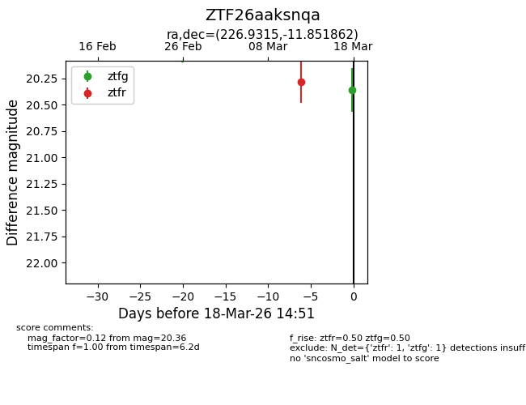
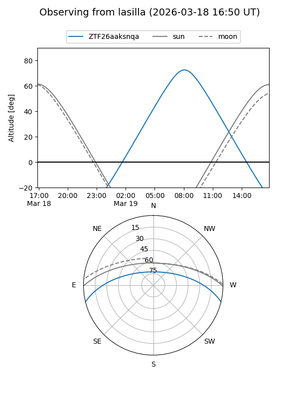
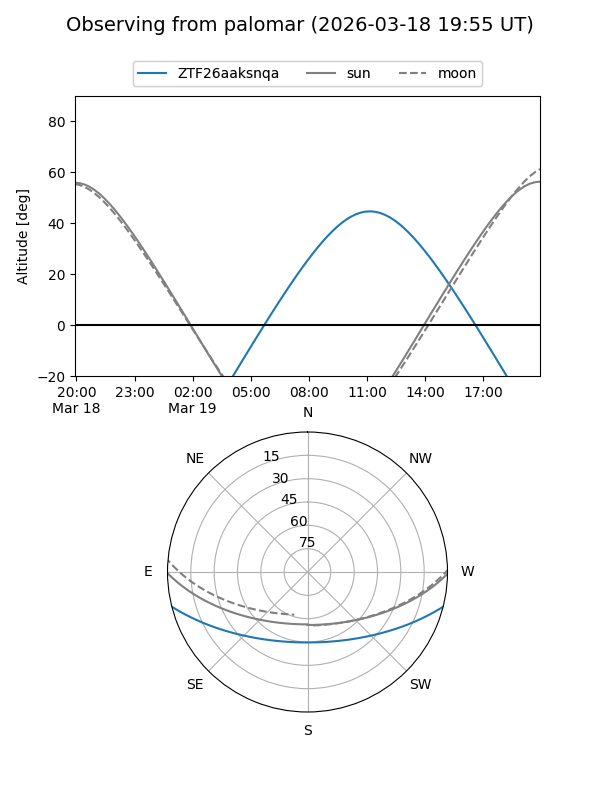

ZTF26aaksnqa
Target ZTF26aaksnqa at 2026-03-18 14:56
Aliases and brokers:
FINK: link
Lasair: link
ALeRCE: link
alt names
ZTF26aaksnqa (ztf,fink_ztf)
Coordinates:
equatorial (ra, dec) = 226.9315,-11.85186
equatorial (HMS+DMS) = 15:07:43.55,-11:51:06.70
galactic (l, b) = (347.7158,+38.89100)
Flags:
Photometry:
last ztfg=20.36, ztfr=20.28
1 ztfg, 1 ztfr detections
Lightcurve

Visibility


Additional plots